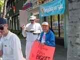
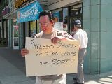

Atheists of Silicon Valley | |||||||
| Home | Links | Events | |||||
| |||||||||||||||
Star Denies ApologyOn April 24th 2002, Atheists of Silicon Valley, East Bay Atheists & San Francisco Atheists held simultaneous pickets outside of bay area Payless ShoeSource stores to protest the appointment of Star Jones as their customer ambassador. No one who stereotypes atheists as "good enough to babysit my kid --- possibly" but not to vote for is cut out to be a true ambassador. Articles in the San Jose Mercury & the San Jose Metro covered the event. We received word from the Metro reporter that she had received a call from Star Jones apologizing to "the atheists and Ms. Lindstrom" and claimed Star Jones said "That will never happen again." Being the very classy folks that we are, we immediately jumped into high gear to craft an acceptance of the apology. After all, anyone can have biases & we can respect what it takes to rethink one's prejudices. Unfortunately, Star Jones now denies the apology and the reporter admits that she never actually spoke with Star Jones personally, but received a voice mail message and has not been able to verify who actually left the message. I'd like to take a moment to remind everyone of everything we have accomplished.
The fact that we were ready to accept Ms. Jones' alleged apology only underlines what truly classy people we are -- always ready to expect the best from folks. Didn't happen this time, but we haven't given up yet! We'll keep you informed. If you haven't sent Star Jones and Payless ShoeSource a letter already as part of the ADSN's "Walk a Mile in My Shoes" campaign, please do so. Stand tall. We done good & we're continuing to do more! |
|  |  | ||
|